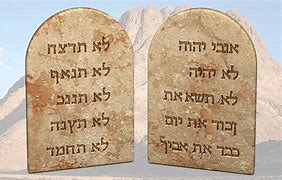

در آغاز...
نام اولین کتاب کتاب مقدس، پیدایش، به معنای آغاز است. دو فصل اول پیدایش به ما می گوید که خدا جهان را آفرید: ستارگان، زمین و تمام سیارات دیگر، و هر موجود زنده ای که هست یا بوده است. خاص ترین مخلوق خداوند انسان ها بودند: مردم. مردم خاص هستند زیرا به شکل خود خدا آفریده شده اند. (به پیدایش 1:26-27 مراجعه کنید)

آدم و حوا
فصل سوم پیدایش داستان چگونگی ورود گناه به جهان را بیان می کند. آدم و حوا، اولین مرد و اولین زن، وسوسه شدند که باور کنند خدا به آنها دروغ گفته است. با باور این دروغ، آنها متقاعد شدند که واقعاً می توانند مانند خدا باشند. وقتی خدا دید که آنها نافرمانی کرده اند، آدم و حوا دیگر از همان رابطه باز با او که قبلاً داشتند لذت نمی بردند. گناه آنها را از خدا جدا کرده بود. و برای هر شخص نیز چنین بوده است، جز کسی که از آن زمان تاکنون زندگی کرده است: همه ما به واسطه گناه از خدا جدا شده ایم.

فصل های چهارم و پنجم پیدایش داستان غم انگیز افزایش شرارت بشر را ادامه می دهد. خدا هنوز دستورات خود را برای درست زندگی کردن به ما نداده بود و مردم همانطور که می خواستند رفتار می کردند. به نظر می رسید تمام تمدن ها متمایل به خشونت و غیراخلاقی از هر نوع هستند. دیدن حالت غم انگیز عالی ترین خلقت او باعث شد که خداوند از اینکه موجوداتی را قادر به چنین رفتاری ساخته است پشیمان شود.

فصل 4 و 5 پیدایش داستان غم انگیز افزایش شرارت بشریت را ادامه می دهد. خدا هنوز دستورات خود را برای درست زندگی کردن به ما نداده بود و مردم دقیقاً همانطور که می خواستند رفتار می کردند. به نظر می رسید که کل تمدن از خشونت و هر نوع غیراخلاقی چشم پوشی می کرد. وقتی خدا حالت غم انگیز خستگی نهایی خود را دید، از اینکه چنین رفتاری را امکان پذیر کرده است، پشیمان شد.
نوح
هنگامی که خدا به خلق گناهکار خود با تحقیر می نگریست، مردی را یافت که با خداوند راه می رفت: نوح. خدا تصمیم گرفته بود که بشریت را از بین ببرد و با نوح و خانواده اش از نو شروع کند. فصلهای ششم تا هشتم پیدایش میگوید که چگونه خداوند همه بشریت را با طوفانی نابود کرد و فقط نوح و همسرش و سه پسر و همسرانشان را نجات داد.فصل نهم تا یازدهم پیدایش داستان چگونگی آباد شدن زمین پس از طوفان توسط پسران نوح، سام، حام و یافث را به ما میدهد. در پایان فصل یازده، با مردی بسیار خاص آشنا میشویم، مردی که خدا میخواهد پدر مردمی باشد که میتوانست آنها را مال خود بداند.


ابراهیم
در پیدایش، کتاب مقدس به ما درباره تعدادی از افرادی می گوید که مانند نوح «با خدا راه می رفتند». راه رفتن با خدا مستلزم ایمان است: اعتقادی بی چون و چرا که خدا آنچه را که وعده داده انجام خواهد داد. برای نوح ایمان زیادی لازم بود تا باور کند که خداوند کل جمعیت زمین را با طوفانی نابود خواهد کرد و از دستور خدا برای ساختن یک کشتی (قایق بزرگ) پیروی کرد، زمانی که اطرافیان او را در حین کار مسخره کردند. در پیدایش دوازده، ما مرد دیگری را می آموزیم که خدا از او ایمان زیادی می خواهد: ابراهیم.
خداوند از ابرام بسیار خواست (خداوند بعداً نام او را به ابراهیم تغییر داد): او از ابراهیم خواست تا وطن خود را ترک کند و به مکانی که هرگز ندیده بود و کسی را نمی شناخت نقل مکان کند. خداوند برای اطاعت او دو وعده به ابراهیم داد:
- که او سرزمین کنعان (آنچه را که اکنون اسرائیل می نامیم) به ابراهیم و فرزندانش خواهد داد.
- که قوم بزرگی از نسل ابراهیم بیرون خواهد آمد
در ذهن ابراهیم، هر دوی این وعده ها باید با آنها مشکل داشته باشند. سرزمین کنعان قبلاً به چندین گروه دیگر تعلق داشت و ابراهیم و همسرش فرزندی نداشتند. و همسر ابراهیم، سارا، برای بچه دار شدن خیلی پیرتر از آن بود. با این حال، ابراهیم ایمان داشت، و از این رو او و تمام اهل بیتش به سوی کنعان حرکت کردند.
اگر داستان ابراهیم را در فصل های 12 تا 23 پیدایش بخوانید، خواهید دید که ایمان ابراهیم کامل نبود: او گاهی به جای اینکه منتظر خدا و زمان او باشد، "امور را به دست خود می گرفت". با این حال، در پیدایش 15:6 می خوانیم، "ابرام به خداوند ایمان آورد و او آن را به عنوان عدالت به حساب آورد."
حتی زمانی که آسان نیست، حتی زمانی که ما نمی توانیم راه را ببینیم، خدا از ما می خواهد که به او ایمان داشته باشیم.

درست همانطور که خدا وعده داده بود، سارا یک پسر داشت. او و ابراهیم او را اسحاق نامیدند. سارا حتی در سنین پیری از بچه دار شدن خوشحال بود.
وقتی اسحاق بزرگ شد و ازدواج کرد، صاحب دو پسر به نامهای یعقوب و عیسو شد. (پیدایش 25:19-پیدایش 30)
یعقوب دوازده پسر داشت (میتوانید فهرستی از نامهای آنها را در پیدایش 35:23-26 ببینید). نام این پسران به نام دوازده قبیله اسرائیل تبدیل خواهد شد. (خدا در واقع نام یعقوب را به اسرائیل تغییر داد - پیدایش 35:10.) از طریق این دوازده پسر، خدا به وعده خود به ابراهیم مبنی بر ایجاد یک ملت بزرگ از او عمل کرد.

حضرت موسی
یکی از پسران یعقوب، یوسف، به مصر رفت و در دربار فرعون افسر بزرگی شد (میتوانید درباره آن در پیدایش 37-50 بخوانید؛ داستانی طولانی، اما کاملاً ماجرایی). سرانجام، هر یازده برادر یوسف نیز به مصر نقل مکان کردند. تا زمانی که یوسف زنده بود خانواده او به دلیل ارتباط او با فرعون زندگی خوبی داشتند.
پس از مرگ یوسف، نسل های دیگری متولد شدند و فرعون جدیدی به قدرت رسید که نمی دانست یوسف مورد لطف خانواده سلطنتی قرار گرفته است. این فرعون جدید دید که تعداد یهودیان (اسرائیل به نام یهودی یا قوم یهود نیز شناخته می شدند) بسیار زیاد شده است. این باعث ترس او شد که مبادا بر حکومت او چیره شوند، بنابراین او تمام بنی اسرائیل (یهودیان) را در مصر برده قرار داد.

در خروج 2:23، کتاب مقدس به ما میگوید که بنیاسرائیل بهعنوان بردگان مصر رنج زیادی متحمل شدند. آنها به درگاه خدا فریاد زدند که آنها را نجات دهد و خداوند آنها را شنید. او مردی را از میان یهودیان برای نجات اسرائیل از بردگی برگزید. نام آن مرد موسی بود.
برخلاف ابراهیم که به دعوت خدا توجه کرد، موسی ابتدا سعی کرد خداوند را وادار کند که از شخص دیگری استفاده کند. (خروج 4: 1-14) خدا به موسی نشان داد که این خداست، نه موسی که در واقع دست فرعون را برای آزادی بردگان یهودی مجبور خواهد کرد. موسی فقط فرستاده خدا خواهد بود.
در مصر، آنها خدایان بسیاری را می پرستیدند - بت ها - نه خدای ابراهیم، اسحاق و یعقوب. هنگامی که موسی برای اولین بار به او نزدیک شد (خروج 5)، فرعون به تمسخر گفت: "خداوند کیست که از او اطاعت کنم؟"
موسی با درخواست دوم که فرعون بردگان یهودی را آزاد کند نزد فرعون بازگشت. اما این بار موسی هشداری از جانب خدا به همراه داشت: اگر فرعون با آزادی بنی اسرائیل موافقت نمی کرد، خداوند یک سری نه بلا را بر مصر راه می اندازد: بلاهای نابودی، بیماری و تاریکی. به طرز شگفت انگیزی، حتی پس از تأثیرات وحشتناک این بلاها، فرعون همچنان از ایمان به قدرت خدا سر باز زد و یهودیان را آزاد نکرد. (خروج 7:15-خروج 11)
تنها پس از طاعون دهم (خروج 12) بود که سرانجام فرعون با آزادی بردگان مصر موافقت کرد. پسر اول هر خانوار مصری کشته می شود. با این حال، خدا اولین پسران یهودیان را نجات خواهد داد. او به آنها دستور داد که بره ای قربانی کنند و خون آن را بر درهای خانه هایشان رنگ کنند. وقتی فرشته مرگ برای کشتن پسران نخستزاده میآمد، از خانههای تمامی بنیاسرائیل که دستورات او را برای رنگ آمیزی خون بره بر درهایشان پیروی کرده بودند، «عبور» میکرد.
تا به امروز، یهودیان هر ساله عید فصح را جشن می گیرند تا معجزه ای را که به رهایی آنها از بردگی کمک کرد، گرامی بدارند.
به رهبری موسی، یهودیان سفر خود را از مصر آغاز کردند. حتی پس از هر آنچه به دست خدا برای مصر اتفاق افتاده بود، فرعون برای آخرین بار سعی کرد یهودیان را در اسارت نگه دارد.

ارتش مصر بنیاسرائیل را تا دریای سرخ تعقیب کرد و فکر میکرد که آنها را در آب به دام انداختهاند (خروج 14). بنی اسرائیل به وحشت افتادند، اما موسی از آنها خواست که به خدای خود ایمان داشته باشند. خداوند به موسی دستور داد که عصای خود را کنار آب بلند کند. به طور معجزه آسایی، آب های دریای سرخ از هم جدا شد و مسیری از خشکی ایجاد کرد که به آنها اجازه داد تا به طرف دیگر بروند. هنگامی که لشکر فرعون می خواستند از همان مسیر عبور کنند، آب دریا از دو طرف فرو ریخت و همه آنها را غرق کرد. سرانجام قوم اسرائیل از مصر خارج شدند و از بردگی آزاد شدند.
و درست همانطور که خدا به موسی گفته بود وقتی برای اولین بار او را صدا کرد، این دست توانا خدا بود که همه چیز را به انجام رساند!
ده فرمان
همانطور که در داستان سیل بزرگ دیدیم، خدا هنوز قوانین خود را به مردم نداده بود. هنگامی که یهودیان راه خود را به سوی سرزمینی که خداوند به ابراهیم و فرزندانش وعده داده بود آغاز کردند، خداوند به موسی دستور داد تا به بالای کوه سینا صعود کند. در آنجا، در حالی که کوه پوشیده از دود برای محافظت از مردم در برابر جلال عظیم خدا، موسی احکام خدا را برای قوم خود دریافت کرد (خروج 20: 1-17).
فقط به این دلیل که یهودیان دیگر در اسارت مصر نبودند، به این معنی نبود که تمام مشکلات آنها پایان یافته است. ماجرای سفر آنها به سرزمینی که خداوند به آنها وعده داده بود، مدت چهل سال را در بر می گیرد!
ایمان بنی اسرائیل ضعیف بود. آنها اغلب شک داشتند که خداوند به آنها روزی دهد. آنها گاهی آنقدر دلسرد می شدند که در واقع در مورد بازگشت به مصر صحبت می کردند! و شاید بدتر از همه، آنها حتی بتهایی را برای پرستش آفریدند زیرا به خدا بسیار شک داشتند.

ماجرای مرگ موسی در باب 34 تثنیه ثبت شده است. در کتاب تثنیه است که خدا قوانینی را که به قوم خود در کوه سینا داده بود، بسط می دهد. او بیان می کند که مردم چگونه باید در میان یهودیان خود رفتار کنند و چگونه باید خدا را پرستش کنند.